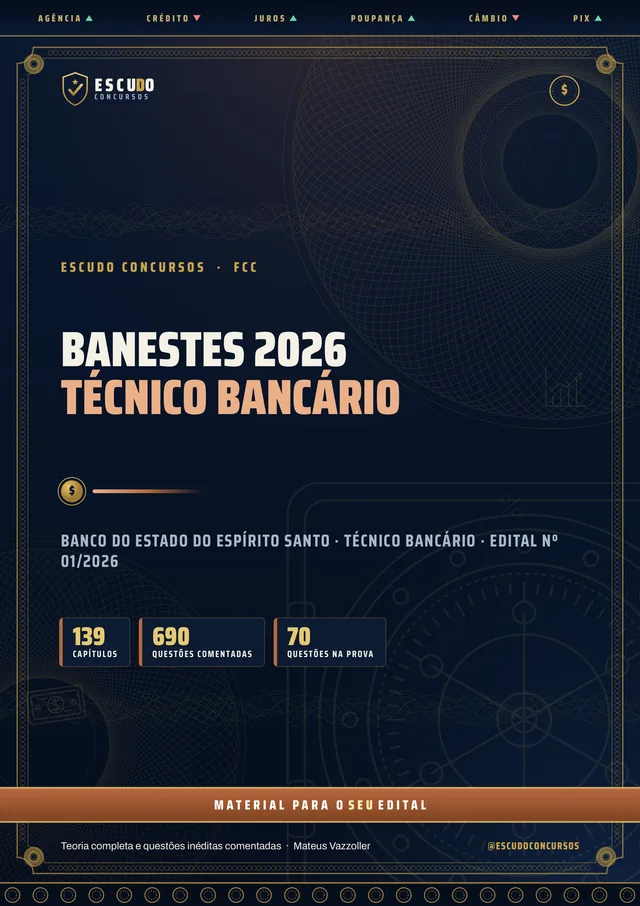
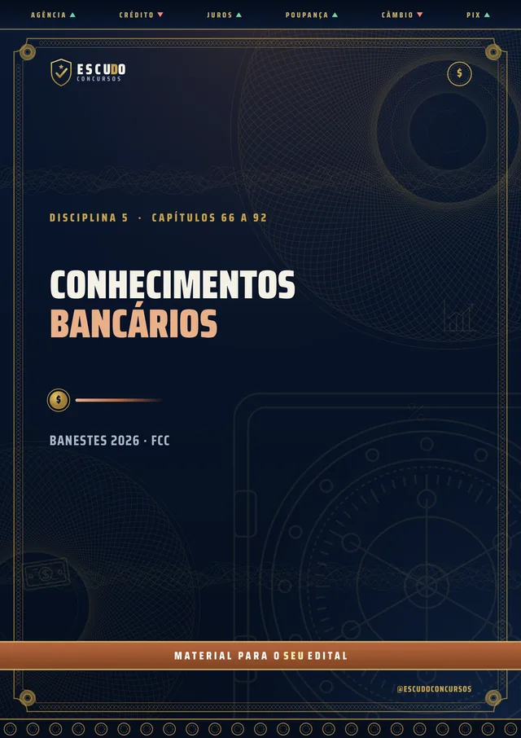
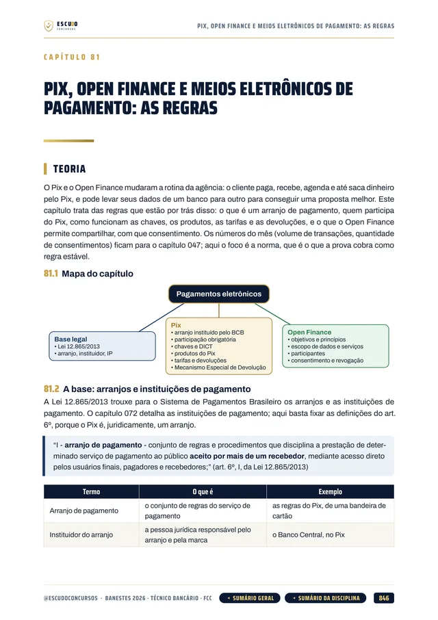
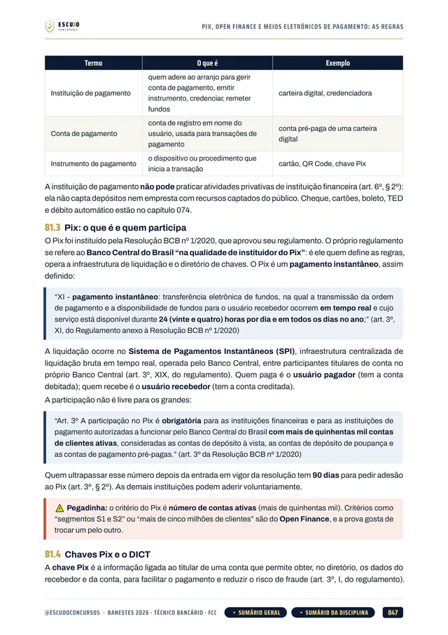
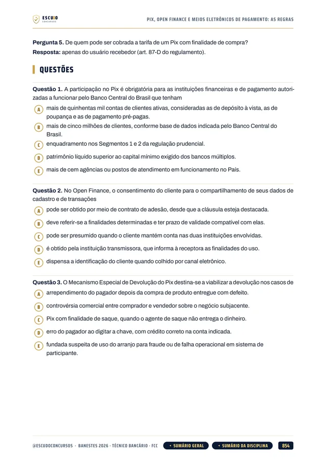
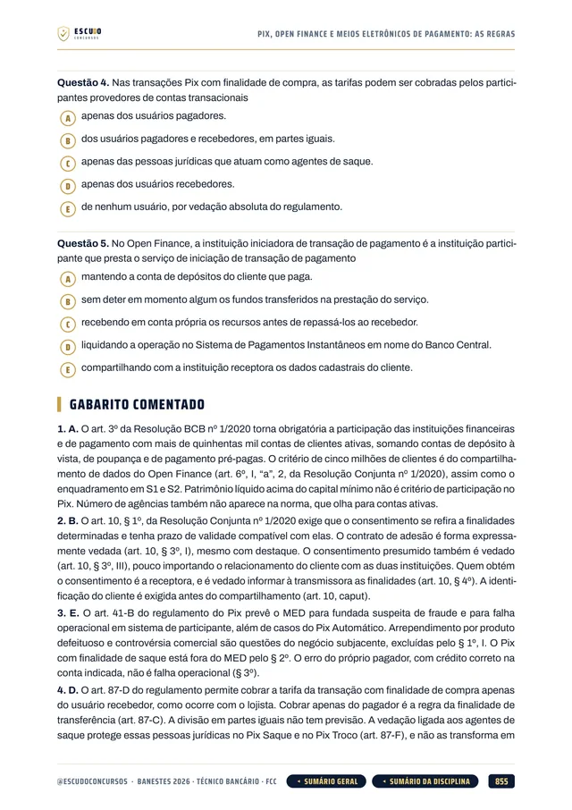

Simulado 1
No meio do caminho
Para medir onde você está e ajustar o estudo enquanto ainda dá tempo.
30 dias após a compra


690questões
comentadas
Banestes 2026 · Apostila em PDF
São 866 vagas de cadastro de reserva para Técnico Bancário do Banestes, e os Conhecimentos Específicos valem dois terços da nota. O seu material cobre as nove disciplinas da prova da FCC? Curso feito a partir do Edital nº 01/2026, item por item, com questões de A a E, como na prova, e gabarito comentado.
de R$ 47 por
R$37
com o cupom BANESTES37 até 23/11/2026. Pelo botão, o cupom já vai preenchido.
R$47
Curso completo, com acesso imediato.
O concurso
O concurso do Banco do Estado do Espírito Santo (Edital nº 01/2026, publicado no Diário Oficial do Espírito Santo em 16 de outubro de 2026 e retificado pelo Edital nº 03/2026, de 23 de outubro) formou cadastro de reserva com 866 postos para Técnico Bancário, distribuídos em 34 polos, 400 deles em Vitória. A remuneração é de R$ 4.552,43 (salário-base mais a gratificação prevista na convenção coletiva), em regime CLT, com jornada de 30 horas semanais. O cargo exige ensino médio completo. As inscrições vão de 19 de outubro a 23 de novembro de 2026, às 23h59, com taxa de R$ 67,00.
A prova da Fundação Carlos Chagas (FCC) é em 24 de janeiro de 2027, domingo, de manhã: só prova objetiva, 70 questões de 5 alternativas, de (A) a (E), com uma só correta, em 4 horas, sem redação, títulos ou prova prática.
A nota final é a média ponderada das duas provas, de 0 a 10: Conhecimentos Gerais (30 questões) têm peso 1 e Conhecimentos Específicos (40 questões) têm peso 2. É habilitado quem chegar a 6,00. Não há nota mínima por disciplina, e uma questão de Específicos vale uma vez e meia uma de Gerais.
Como a regra é a média, Conhecimentos Bancários, com 15 questões, é sozinho a disciplina que mais pesa. O curso segue o programa do Anexo IV com a legislação e as normas vigentes em 16/10/2026, a data de publicação do edital, como o próprio edital manda.
| Disciplina | Questões | Peso |
|---|---|---|
| Língua Portuguesa | 10 | 1 |
| Matemática e Raciocínio Lógico | 10 | 1 |
| Atualidades do Mercado Financeiro | 5 | 1 |
| Ética, Compliance e ESG | 5 | 1 |
| Conhecimentos Bancários | 15 | 2 |
| Matemática Financeira | 5 | 2 |
| Noções de Probabilidade e Estatística | 5 | 2 |
| Noções de Informática e Comportamentos Digitais | 5 | 2 |
| Vendas, Negociação e Atendimento | 10 | 2 |
| Habilitação com média ponderada de 6,00: Gerais (30 questões) peso 1 e Específicos (40 questões) peso 2. | 70 |
O formato
Você estuda lendo, no seu ritmo, pela área de membros da Hotmart ou com os arquivos baixados. O curso foi feito a partir do Edital nº 01/2026, item por item, na ordem do conteúdo programático do Técnico Bancário, com a legislação e as normas vigentes em 16/10/2026, a data de publicação do edital, como o próprio edital manda.
Páginas reais do PDF
Toque numa página para ver em tamanho maior.





O que você recebe
Curso em PDF organizado em módulos pelas disciplinas do edital, no padrão visual ESCUDO, para ler no computador, no tablet, no celular ou no app da Hotmart. Não há videoaulas.
139 capítulos cobrindo as nove disciplinas da prova: Língua Portuguesa (25 capítulos), Matemática e Raciocínio Lógico (18), Atualidades do Mercado Financeiro (8), Ética, Compliance e ESG (13), Conhecimentos Bancários (27), Matemática Financeira (10), Probabilidade e Estatística (8), Informática e Comportamentos Digitais (15) e Vendas, Negociação e Atendimento (14), mais um capítulo de abertura sobre a prova.
690 questões inéditas com 5 alternativas, de (A) a (E), como na prova, todas com gabarito comentado: por que a correta está correta e onde está o erro de cada uma das outras quatro.
Conhecimentos Bancários em 27 capítulos, a disciplina que mais pesa (15 questões): Sistema Financeiro Nacional, Conselho Monetário Nacional, Banco Central, CVM, Susep e Previc, instituições financeiras e de pagamento, contas, cartões, crédito e investimentos, mercado de capitais, política monetária, Pix e Open Finance, prevenção à lavagem de dinheiro (Lei 9.613/1998 e Circular 3.978/2020), Coaf, proteção do consumidor, seguros, previdência complementar, capitalização, consórcio e a Resolução CMN 4.966/2021.
Ética, Compliance e ESG em 13 capítulos: ética e moral, o Guia de Conduta Ética do Banestes em três capítulos, governança corporativa, compliance, canais de denúncia, anticorrupção e LGPD, ESG e a PRSAC.
Matemática Financeira em 10 capítulos: juros simples e compostos, taxas nominal, efetiva e real, desconto, valor presente e fluxo de caixa, séries de pagamentos, sistemas de amortização (SAC, Price e Americano) e o cálculo financeiro aplicado ao crédito, com o CET.
Informática e Comportamentos Digitais em 15 capítulos: a LGPD e a LGPD no setor bancário, hardware e software, Windows e Linux, redes, navegadores, nuvem, Google Workspace, segurança da informação, phishing e golpes digitais e inteligência artificial com aplicações bancárias.
Vendas, Negociação e Atendimento em 14 capítulos: qualidade no atendimento, comunicação, perfil do consumidor de serviços financeiros, técnicas de vendas, pós-venda e fidelização, negociação, CRM, venda consultiva de produtos bancários e canais digitais.
Caso prático na rotina de uma agência bancária em cada capítulo de conteúdo.
Teoria com recursos para memorizar: mapa de cada capítulo, fluxogramas, esquemas, quadros de "pegadinha" e "não confunda", questão comentada passo a passo, revisão relâmpago e teste de memória no fim de cada capítulo.
Navegação clicável: do sumário você vai direto ao capítulo, e volta pelo botão do rodapé.
2 simulados inéditos no formato exato da prova (70 questões de A a E, na ordem e na divisão do edital), cada um com caderno de comentários. O Simulado 2 é liberado na semana anterior à prova, para o seu último teste.
Área de membros
| Módulo | Conteúdo | Liberação |
|---|---|---|
| M0 Comece aqui | Apresentação + capítulo 001 (como é a prova e como usar o curso). Bônus: PDF completo para baixar e imprimir | Na compra; o PDF completo no 8º dia |
| M1 Língua Portuguesa | Capítulos 002 a 026 | Na compra |
| M2 Matemática e Raciocínio Lógico | Capítulos 027 a 044 | Na compra |
| M3 Atualidades do Mercado Financeiro | Capítulos 045 a 052 | Na compra |
| M4 Ética, Compliance e ESG | Capítulos 053 a 065 | Na compra |
| M5 Conhecimentos Bancários | Capítulos 066 a 092 | Na compra |
| M6 Matemática Financeira | Capítulos 093 a 102 | Na compra |
| M7 Probabilidade e Estatística | Capítulos 103 a 110 | Na compra |
| M8 Informática e Comportamentos Digitais | Capítulos 111 a 125 | Na compra |
| M9 Vendas, Negociação e Atendimento | Capítulos 126 a 139 | Na compra |
| M10 Simulado 1 | 70 questões no formato da prova, caderno de comentários | 30 dias após a compra |
| M11 Simulado 2 | 70 questões no formato da prova, caderno de comentários | 17/01/2027 (7 dias antes da prova) |
Treino no formato da prova
Cada simulado tem 70 questões de A a E, no formato exato da prova, com caderno de comentários.
Simulado 1
Para medir onde você está e ajustar o estudo enquanto ainda dá tempo.
30 dias após a compra
Simulado 2
Liberado na semana anterior à prova de 24/01/2027.
17/01/2027
Para quem é
Para quem vai prestar Técnico Bancário do Banestes em 24/01/2027 e quer estudar pelo programa do edital, com a média ponderada em mente: os Conhecimentos Específicos, que valem dois terços da nota, cobertos por inteiro.
Você tem 7 dias de garantia pela Hotmart. Se não for o que você esperava, pede o reembolso pela própria Hotmart, dentro do prazo.
Sem surpresa na área de membros
Na compra: as nove disciplinas em PDF, uma por módulo, com a teoria e as questões comentadas. É o curso inteiro, para começar a estudar no mesmo dia.
8 dias após a compra: o PDF completo para imprimir. É o mesmo conteúdo dos módulos num arquivo só, liberado depois da garantia de 7 dias.
Simulado 1: 30 dias após a compra, para medir onde você está no meio da preparação.
Simulado 2: em 17/01/2027, 7 dias antes da prova, para o último teste.
O PDF completo e os simulados aparecem bloqueados na área de membros até a data de cada um: não é conteúdo faltando, é a liberação programada.
Dúvidas
Não. É um curso 100% em PDF: teoria, questões comentadas e simulados para ler e resolver.
O acesso é imediato depois da confirmação do pagamento, pela área de membros da Hotmart (web ou app). O PDF completo para baixar e imprimir é liberado no 8º dia.
O Simulado 1 é liberado 30 dias após a compra. O Simulado 2 é liberado em 17/01/2027, uma semana antes da prova.
Não como curso completo: o conteúdo segue o programa do Técnico Bancário. O Técnico em Segurança do Trabalho do Banestes e o Assistente Securitário da Banestes Seguros têm outros editais e outros Conhecimentos Específicos.
Só prova objetiva, no domingo de manhã, com 4 horas: 70 questões de múltipla escolha com cinco alternativas, de (A) a (E), e uma só correta. São 30 questões de Conhecimentos Gerais (Língua Portuguesa, Matemática e Raciocínio Lógico, Atualidades do Mercado Financeiro e Ética, Compliance e ESG), com peso 1, e 40 de Conhecimentos Específicos (Conhecimentos Bancários, Matemática Financeira, Probabilidade e Estatística, Informática e Comportamentos Digitais e Vendas, Negociação e Atendimento), com peso 2. Não há redação nem prova prática. As questões do curso seguem esse formato.
Média ponderada de 6,00, na escala de 0 a 10, pela fórmula (Gerais + 2 x Específicos) dividido por 3. Não há nota mínima por disciplina. Como são vagas de cadastro de reserva, a classificação também importa.
Não. Ela prorrogou as inscrições até 23/11/2026, criou a reserva de vagas para candidatos hipossuficientes e refez o quadro de vagas, mas não mexeu no quadro de provas, no número de alternativas nem no conteúdo programático. O curso segue o edital consolidado.
Não. As 690 questões de treino e as dos simulados são inéditas, escritas no formato do edital a partir do conteúdo programático do Técnico Bancário.
Ensino médio completo, conforme o edital.
Você tem 7 dias de garantia pela Hotmart. Se não for o que você esperava, pede o reembolso.
Banestes 2026 · Técnico Bancário
de R$ 47 por
R$37
com o cupom BANESTES37 até 23/11/2026.
R$47
Curso completo, com acesso imediato.
Material para o SEU edital. ESCUDO Concursos.